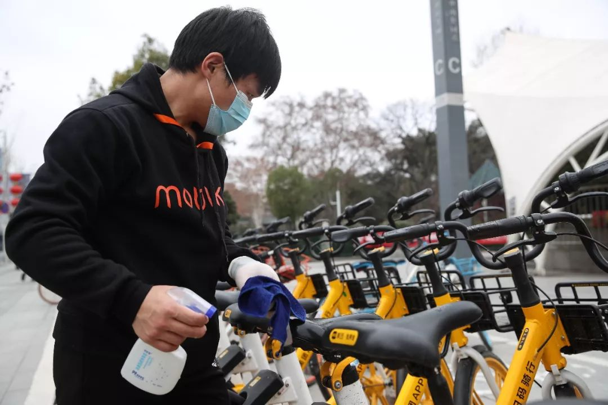
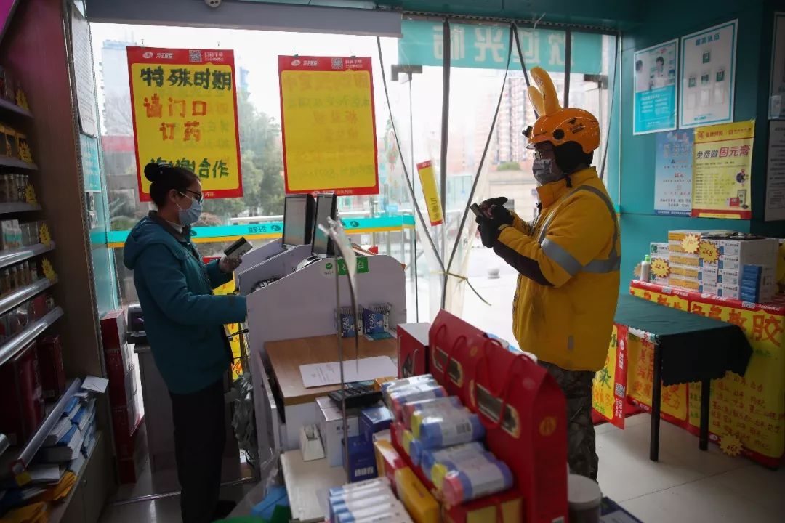

武汉外卖小哥：害怕是正常的，但我希望自己一直是冷静的
原文链接 备份链接 ** 在武汉这座几乎停摆的城市里，一群外卖小哥和他们背后的团队还在正常运转。他们需要每天前往收治新冠肺炎的定点医院，给一线医护人员送餐，是连接这座城市的动线。这项“医护关爱计划”，是在1月26日开始的，饿了么联 …

▲ 武汉骑手老计说：明天太阳会照常升起。（受访者供图）
经此一役，杨静、华浩、李大双、曹新志、胡启等人都明白了一个道理：这是一场“团战”，那些拯救人们于危难中的英雄，也需要被守护。在他们背后的支撑，是城市新基础设施在疫情的特殊时期，所展现的社会责任与担当。
“现在青菜很紧缺，基本上顾客抢菜的时候，我们在路上骑车去店里的路上；等在店里忙得差不多时，菜也基本卖没了。”留守武汉保证蔬菜供应的员工，自己却吃不上一口新鲜蔬菜。
全文共5675字，阅读大约需要13分钟
驰援武汉的护士长李岩有两次刻骨铭心的记忆。
第一次是因为一款黄色防护服。李岩身高不到一米六，却分到了L号。她很快感受到濒死般的窒息，心跳急速加快，无法吸入空气。李岩迅速扑向窗口，把防护服“使劲往下抻”，露出了口罩。空气重新进入肺部，李岩不敢再把过大的防护服掩住口鼻。
第二次是在一位女病患出院时。她寡言少语，在向李岩表达谢意时，才透露了家庭情况：她的父母均因感染新冠肺炎去世，她爱人也在另一所医院治疗，孩子不得不暂时寄养在别处。
“特别特别感谢你们给了我新生，我一定好好活下去。我不知道我爱人会怎样，但我一定为了孩子，好好活着。”女患者说。李岩落下泪来。
李岩支援的是武汉市第七医院，该院被指定为发热患者定点诊疗医院。
武汉的新冠肺炎疫情，让人们看到了一线医护人员的努力，在政府之外，大量企业在后方支援，尤其互联网行业在“战疫”中发挥着越来越重要的作用。
据中国社科院钟宏武教授研究团队统计，截至2020年2月17日，共有3413家企业为抗疫捐赠100万元以上，累计捐赠276.9亿元，相当于2019年上半年武汉市GDP的3.7%，其中平均每家企业捐赠约811万元。
基金、物资、资金都是企业传统的捐赠方式。此外，随着移动互联网和本地服务业的兴起，以美团、滴滴等公司为代表的“城市新基础设施”，在封城之下的武汉，发挥了重要作用。
美团作为连接线上线下的本地生活服务平台，通过“捐服务”的方式，发挥平台优势。以帮助医护人员为核心，解决医护人员就餐、出行等难题，为医疗机构开通“绿色服务通道”配送食材等。同时，为了保障武汉市民的日常生鲜、生活必需品的购买，美团骑手成为这座城市的“逆行者”，美团买菜业务保障了市民对生鲜食材的需求，而免费的心理咨询服务缓解武汉的焦虑。美团一系列举措，均是围绕解决武汉当下的“痛点”出发。
水电煤之外，“本地生活服务”这一新城市基础设施的高效运转，离不开其背后数以千计的一线人员，是乐观、勇气和奉献精神以及使命感驱动着他们。

▲ 2020年2月11日，武汉骑手在外卖站点内等待开工。（受访者供图）
1
在武汉，医护人员忙得连难过的时间都没有。
武汉市第七医院第一病区主任付学东对媒体表示，所有医护人员都在日以继夜地工作，一日三餐都随机进行。李岩所在的河北省援鄂抗疫医疗队抵达之前，武汉市第七医院的医护人员轮值压力到达峰值，“从排班上就能看出他们有多累”。
即便是现在，每个护士也要看护6-8个病人，其中多为重症病患，“我们既是护士、又是家属、还是护工和保洁员”。面对有腹泻表现的病患，李岩等护士一天要为他们擦洗5次。
医护人员每天至少工作8小时，吃饭、休息时间是1个小时，除去穿脱防护服的时间，休息时间所剩无几。“大家可能就利用这时间到休息室里喝杯水。”李岩说，都不敢多喝，但一定得喝一口。因为穿着防护服说话基本靠“吼”，很费嗓子。
和饼干、蛋黄派相比，方便面曾是医护人员唯一的“热餐”。2020年除夕，武汉医护人员吃方便面的画面刺痛了很多国人的心。
美团人看到了这一场景，随后美团外卖就紧急联合真功夫、豪客来、香他她煲仔饭、老乡鸡等平台上多个商家，为医护人员免费送餐。仅真功夫汉口火车站一家门店，就日供1000份餐食，留守员工仅有5、6位，人均工作量是平时的四倍。
免费送餐第一天，是大年初三。真功夫门店副经理杨静从早七点到晚七点，和同事准时做出1000人次的餐食，自己忙得一整天没时间吃饭。晚上回到家后，她泡了一份方便面当晚餐 “（绿叶）青菜好贵，要十三块钱一斤。”杨静没舍得。
比平时更大的出餐量，对货品供应链是巨大的考验。一天，送菜的货车坏在途中，耽误了两天。杨静和员工们把自己工作餐的食材省下来，首先保障医护人员的每日餐食。他们只能把过期的青菜炒着吃，“能省一点是一点”，杨静说。
真功夫等美团平台的爱心商家做好餐食后，美团外卖的骑手会分批运到武汉的十余家定点医院。美团送餐司机华浩每天要向汉阳医院和武昌医院送去200份餐食，医生们见到华浩齐声说“谢谢”，“有饭吃了”。

▲ 美团把餐食送到后，医护人员在排队取餐（受访者供图）
在非常时期，一些医院不仅缺医疗物资，还会面临生活物资的断供。2020年1月30日晚，武汉大学人民医院东院区食堂经理李大双拨打美团快驴的400电话求助：“封城了，到处买不到食材，医院食堂后厨里的库存仅够吃两天了，能不能赶快帮帮忙？我们这里需要蔬菜、冻品和米面粮油！”
据李大双介绍，该院每天用餐的医护人员和患者有2000人次。随着一月下旬医院收治病人的增加，食材库存迅速告急。
美团快驴进货连夜为该院调度人、货、车，沟通各部门打通障碍。1月31日下午4点，武大人民医院东院区订购的100多件总重达1.7吨的食材货品配送完成。全院的吃饭问题解决了，李大双和美团都松了一口气。

▲ 快驴进货为医疗机构开通食材配送绿色通道（受访者供图）
配送热饭菜的同时，美团还给武汉医护人员免费配送水果和下午茶。配送的外卖小哥曹新志说，他看懂了取餐医生眼神里的感动——因为闪有泪光。一次送餐后，一群医生给曹新志鞠了一躬，把他急坏了，“我说千万别这样，这样子就打脸了，你们才是真正辛苦了。”
自1月30日开始，美团联合百果园，每天为武汉市汉阳医院、中医院汉阳分院等十余个重点医院和各地支援医疗队，免费赠送超过600份水果。
“在水果的选择中，我们第一想到的是营养、安全、方便和好吃，我们选择的水果主要有车厘子、沙糖桔、进口香蕉等，既方便医护人员食用又有营养保障。”百果园三方渠道管理部经理匡士婷说。
曹新志对医护工作强度的理解，源自他用私家车接送护士长上下班时看到的真实状态，“整个人特别憔悴，这是其一。第二，天气这么冷，我看她们衣服都湿透了，脸上那汗，帽子都湿透了。她们面对着死亡，精神高度紧张。”
截至2月21日，美团医护紧急专供餐项目，已联合真功夫、探鱼、喜茶、百果园等多家品牌商家，为武汉市定点发热门诊医院以及上海、广东、空军军医大、河南等支援湖北医疗团，累计送出餐品、茶饮、水果49625份。
全国驰援武汉的医疗队越来越多，而城内公共交通全面停运，医护人员如何便利出行成为新的难题。一般而言，武汉当地医院会安排支援团队入驻附近酒店，以金银潭医院为例，安排入驻的酒店距离医院近2公里，步行约需20-30分钟，使用共享单车是个省时省力的办法，但医护人员发现“外地手机号扫描无法开锁”。
1月29日，有医生在朋友圈发出求助信息。当时武汉金银潭医院周边只有10辆单车，但需求量预计在120辆左右。美团得知后，不到24小时完成单车调度，并向多家单位发放了10052张免费月卡，两天后，30万美团单车又并宣布在湖北地区免费使用。
“我们虽然不能像医护人员一样在一线救人，也要做点力所能及的事情。”美团单车的调度师傅胡启是武汉人，除了保证医护人员有车用，还会每天对车把、坐垫、刹车、铃铛、坐垫调节器等全车的每个部位进行彻底消毒。

▲ 调度师傅在消毒单车（受访者供图）
美团大数据显示，在武汉“封城”以后，单车用户平均骑行距离为1.7公里，较之前增加60%，平均骑行时长约19分钟，较平时翻倍，这一定程度上说明了武汉的医护和防疫人员正在使用单车进行更长距离的通勤；此外，近来在湖北骑行的外地用户平均占比增长近一倍。其中不少人为外地援鄂的一线防疫人员。
为了向白衣战士表达敬意，美团公益基金会捐赠2亿元设立全国医护人员支持关怀专项。截至2月19日，美团公益基金会已完成对山西、江西、安徽、江苏等13省区市援鄂医疗队的定向捐赠——对已派出的4299位成员账户发放5000元慰问金。河南、湖南、广东、福建等省也在同步推进中。
经此一役，杨静、华浩、李大双、曹新志、胡启等人都明白了一个道理：这是一场“团战”，那些拯救人们于危难中的英雄，也需要被守护。在他们背后的支撑，是美团作为城市新基础设施，在疫情的特殊时期，所展现的社会责任与担当。
2
在这场前所未有的疫情面前，有500万人离开了风暴中心武汉，也有一个人不顾一切返回来。
96年出生的李丰杰本来已经回湖北孝感过春节，但在家看到武汉疫情新闻的他坐立难安，“各地的人都来支援武汉。我觉得这件事跟我有关系，我不应该继续在家里。”李丰杰是美团外卖武汉一个站点的骑士长，他想回武汉，与队友一起为武汉人送一份热呼呼的饭。
当时湖北通行道路关闭，火车、客车均已停运。于是李丰杰陪家人过完年，初一早上7点，吃过早餐后他就开始徒步向武汉进发，身上只带了手机和一瓶水。从天亮一直走到天黑，他没有停下休息。进入武汉时，设卡的人告诉他“进了武汉就不能出来了”，李丰杰没有犹豫。他最终花了近12个小时，步行50公里，抵达武汉配送的一线。
新年里，穿梭在武汉的美团骑手们开始接到越来越多“奇怪”的订单。有一单写着“妈妈做的饭，给爸爸送去，我爸爸是前线医生，谢谢小哥了。”接单的美团骑手老计泪目了，把这个故事发到微博上，获得近千人点赞。
买药、买体温计、买口罩、买酒精、买菜等，老计接到用户订单的需求都是最紧俏的物资，但他总是尽力满足。武汉街头的酒精和84消毒液基本都断货。遇到有药店良心价限量卖口罩，他就排队买两包。发现少量药店还能买到体温计，老计本来想全买光分给顾客，但一转念，只买了四个。

▲ 骑手老计在药店内取货（受访者供图）
地方跑的多了，他熟悉各种生活必需品的情况，同时在微博上实时更新武汉周围药店口罩、消毒水、药品和蔬菜的情况。他每天在城市里的所见所闻都成了“刚需”——人们需要知道武汉怎样了，在家隔离的武汉人也需要知道外面是什么样。
耿直的老计就在微博上用图片记录看到的一切、用文字写下真实故事，有笑有泪、有苦有乐，在他名为@计六一六的微博里，大家看到，武汉不是一座空城，每户房、每扇窗背后都有人。老计的粉丝很快从40个涨到6万。有人给他加油、有人叮嘱他小心、有人给他送口罩，有人留言求助——武汉封城第十天，老计收到武汉女孩小青的私信，她怀疑自己感染了，每天以泪洗面、不敢跟父母说，于是在家自我隔离的她请求老计帮忙买药。
老计不仅很快给她送去了药，还把微博网友的温暖留言发给小青，颇为治愈。
心理咨询师分析小青的状况源自焦虑和恐慌。这些恐惧会带来明显的病理症状，“陡然的心悸、手抖，不能呼吸等比较严重的状态；或者我发烧、嗓子痛，开始担心会不会真的得病，得病了我能否被救治，现在有没有足够的床位，或者说我要不要去医院等……”心理咨询师唐琼分析并模拟了患者心理，小青的恐慌并不是个例，武汉人正承受着较大的心理压力。
唐琼是“幸福谋方”的全职咨询师，虽然面对面沟通效果更好，但疫情的现实并不允许。而互联网的优势在于不受地域限制，能帮助更多需要的人。2020年1月27日，美团联合幸福谋方、壹点灵、北京怡然心语等多家机构发起的免费在线心理援助行动上线。应激性的焦虑障碍占据一大半求助者，主要体现在市民和医护人员的家属身上。
唐琼建议民众试着让生活变得有序、有意义，不把精力过度集中于不确定性。“因为我们对当下最有帮助的，就是把自己的日子过好。”咨询师孔焕云提醒人们“保持好心态非常重要”，因为负面情绪会增大压力、降低人体免疫力。
老计送完单后，笃定地告诉小青：“你会好的、天会好的、武汉也会好的。”
林宇的父母不这么认为，他们认为武汉太危险，让儿子赶紧回来。林宇没听父母的，“如果我走了，这些人的生活都没法维持了。”他是美团买菜三原中央公园站门店的留守员工，他口中的“这些人”指的是站点附近3、4个社区、数万人的普通住户。
因为站点主要提供生鲜菜品，很快吸引了社区“叔叔阿姨”一大批忠实客户。美团承诺疫情期间不断供，“顾客阿姨”毫不吝啬地向林宇表达感激之情。在武汉，美团买菜20多个站点全部有人坚守，哪怕路上各种封堵，也会竭力保证武汉居民吃上蔬菜水果。

▲ 门店开门营业之前（图 / 姜海峰）
由于人手紧缺，美团买菜华中仓储服务中心的的徐浩，初二就紧急回到武汉，他每天待在仓库，晚上睡在车里，平时就吃饺子、泡面、八宝粥等干粮。
美团买菜汉口棉花站的刘迪兰也是天天饺子、面条。“现在青菜很紧缺，基本上顾客抢菜的时候，我们在路上骑车去店里的路上；等在店里忙得差不多时，菜也基本卖没了。”留守武汉保证蔬菜供应的员工，自己却吃不上一口新鲜蔬菜。
3
每个人的生活都在这段时间经历着巨大变化——就像突然停电后启用备用电源的状态，所有的需求都在较低限度维持着。这些变化都是暂时的，更多温润而长久的改变发生在细微处：
老计能分辨出以前顾客的“谢谢”与如今“谢谢”的区别，前者是顾客本身的修养，后者是发自内心的真实感激和对生活的感恩。
李丰杰以前认为人们瞧不起快递员，现在他发现大家称呼他们为维系城市呼吸的“摆渡人”。
1月21日到2月20日美团外卖在全国订单备注里，“武汉”出现了7035次，“医院”出现了60585次，“注意”出现了233494次，“感谢”出现了275847次，“加油”出现了29072次，“辛苦”出现了835412次。

▲ “医生护士辛苦了！小哥，谢谢。”（受访者供图）
无数只言片语的感谢，汇总成为骑手坚守的理由，也给了他们前行的勇气。紧缺的防护物资和消毒用品，让骑手成为帮用户跑10余家药店买物资的超人，让他们在定点收治医院卸货时忘记了害怕，让他们成为这个城市不可或缺的人，公司的专业与理性承托住了员工的满腔道义和热血行为。
疫情风暴之下，以美团为代表的本地生活服务平台，正在成为具有准公共产品属性的基础设施，有人称之为“城市新基础设施”。它有效地改善了公众生活品质，践行了美团“帮大家吃得更好，生活更好”的使命。
非常态时期，美团通过提供基础民生保障，将业务生态链上的紧密利益相关者拉入新基础设施时代，为本地生活用户提供不可替代的社会价值。
西方学者研究发现，城市社区生活空间质量在很大程度上是由社区服务设施决定的。本地生活服务如果不能做到社会责任先行，终会被城市社区所摒弃。
当他们表现出真心、正义、无畏和同情时，再麻木的人也能够感知，再漫长的冬夜也能熬过。“外卖老哥”老计的总结是，送什么都不重要，外卖小哥的存在是种安慰。
一位美团买菜的武汉员工谈及选择时表示：“都害怕，我也害怕，但是总要有人往前面走一步。”一个人往前是孤胆英雄，一群人一起往前，就是“生活在继续”。
（专题）
原文链接 备份链接 ** 在武汉这座几乎停摆的城市里，一群外卖小哥和他们背后的团队还在正常运转。他们需要每天前往收治新冠肺炎的定点医院，给一线医护人员送餐，是连接这座城市的动线。这项“医护关爱计划”，是在1月26日开始的，饿了么联 …
原文链接 备份链接 “ 我生活在这个城市，做了自己该做的事。 武汉封城后，这个城市从未如此空旷安静，路上少有车辆，却有一道独特的风景，就是在城市中穿梭的外卖人员。 疫情下，医护人员在一线救治病人，保障我们的生命安全；而我们这些身在武汉的 …
原文链接 备份链接 除了菜品的装卸、运送外，我还要负责为各个医院不同的人群制定不同的菜谱。比如，护士群体需要增加抗疲劳的食材，专家组的菜品可略微清淡，而建筑工人的菜单，则需要大油大荤。 口述 | 石在余 整理 | 刘朝晖 昨晚到今天，我 …
原文链接 备份链接 文/六筒 李岩半年前刚去过武汉，和家人去旅游，主要想看看黄鹤楼。那还是夏天，热气蒸得人头上冒烟。高温挡不住蜂拥的游客，摩肩接踵，拥塞的车辆在大道上艰难挪动。“真是个大都市”，她想。 李岩是河北医科大学第二医院呼吸与危重 …
原文链接 备份链接 “ - 疫 情 之 下 - 武汉的疫情就像一簇紧簇的乌云，笼罩在每一个人的心头。但所幸，在这个受伤的城市中，在每台志愿者车里，在疲于奔波的路上，总有那么一群可爱的人，温暖着我们前线医护工作者的心。 ” 1 2020年 …